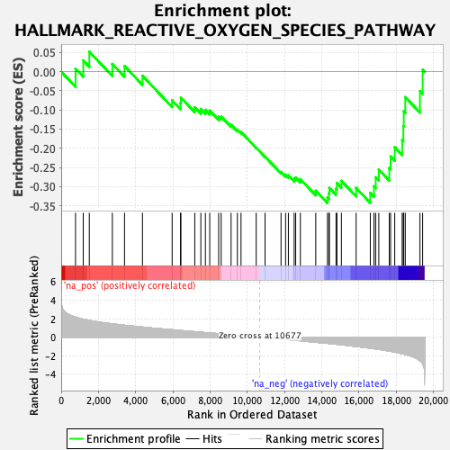
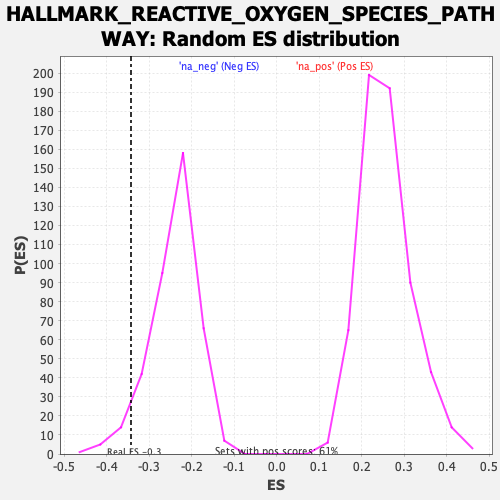

| | | Dataset | CK_basal |
| Phenotype | NoPhenotypeAvailable |
| Upregulated in class | na_neg |
| GeneSet | HALLMARK_REACTIVE_OXYGEN_SPECIES_PATHWAY |
| Enrichment Score (ES) | -0.34303212 |
| Normalized Enrichment Score (NES) | -1.4164318 |
| Nominal p-value | 0.05154639 |
| FDR q-value | 0.045405015 |
| FWER p-Value | 0.299 |
Table: GSEA Results Summary

Fig 1: Enrichment plot: HALLMARK_REACTIVE_OXYGEN_SPECIES_PATHWAY
Profile of the Running ES Score & Positions of GeneSet Members on the Rank Ordered List
| SYMBOL | RANK IN GENE LIST | RANK METRIC SCORE | RUNNING ES | CORE ENRICHMENT | | 1 | TXNRD1 | 770 | 2.173 | 0.0080 | No |
| 2 | SBNO2 | 1186 | 1.951 | 0.0293 | No |
| 3 | MBP | 1510 | 1.808 | 0.0523 | No |
| 4 | MPO | 2748 | 1.441 | 0.0203 | No |
| 5 | PFKP | 3402 | 1.289 | 0.0149 | No |
| 6 | PRDX2 | 4366 | 1.094 | -0.0106 | No |
| 7 | PRDX4 | 5960 | 0.801 | -0.0749 | No |
| 8 | LSP1 | 6410 | 0.721 | -0.0822 | No |
| 9 | HMOX2 | 6431 | 0.717 | -0.0675 | No |
| 10 | SRXN1 | 7176 | 0.590 | -0.0928 | No |
| 11 | FES | 7502 | 0.533 | -0.0979 | No |
| 12 | GPX3 | 7746 | 0.494 | -0.0995 | No |
| 13 | MSRA | 7979 | 0.456 | -0.1015 | No |
| 14 | GPX4 | 8460 | 0.375 | -0.1179 | No |
| 15 | CAT | 8594 | 0.354 | -0.1170 | No |
| 16 | GCLC | 9126 | 0.263 | -0.1385 | No |
| 17 | STK25 | 9466 | 0.205 | -0.1514 | No |
| 18 | HHEX | 9660 | 0.175 | -0.1575 | No |
| 19 | LAMTOR5 | 10476 | 0.039 | -0.1985 | No |
| 20 | GLRX2 | 10951 | -0.049 | -0.2218 | No |
| 21 | ABCC1 | 11810 | -0.196 | -0.2615 | No |
| 22 | ERCC2 | 12054 | -0.238 | -0.2688 | No |
| 23 | G6PD | 12205 | -0.267 | -0.2707 | No |
| 24 | NDUFS2 | 12515 | -0.326 | -0.2794 | No |
| 25 | PDLIM1 | 12597 | -0.339 | -0.2762 | No |
| 26 | SCAF4 | 12850 | -0.389 | -0.2806 | No |
| 27 | IPCEF1 | 13675 | -0.549 | -0.3109 | No |
| 28 | TXN | 14302 | -0.668 | -0.3284 | Yes |
| 29 | NQO1 | 14382 | -0.683 | -0.3175 | Yes |
| 30 | GCLM | 14406 | -0.686 | -0.3037 | Yes |
| 31 | NDUFA6 | 14765 | -0.765 | -0.3054 | Yes |
| 32 | MGST1 | 14812 | -0.774 | -0.2908 | Yes |
| 33 | TXNRD2 | 15053 | -0.818 | -0.2853 | Yes |
| 34 | CDKN2D | 15843 | -1.013 | -0.3036 | Yes |
| 35 | PRDX1 | 16605 | -1.199 | -0.3165 | Yes |
| 36 | NDUFB4 | 16804 | -1.254 | -0.2992 | Yes |
| 37 | GLRX | 16895 | -1.281 | -0.2758 | Yes |
| 38 | OXSR1 | 17063 | -1.329 | -0.2554 | Yes |
| 39 | SOD2 | 17625 | -1.504 | -0.2513 | Yes |
| 40 | ATOX1 | 17697 | -1.532 | -0.2215 | Yes |
| 41 | PRDX6 | 17918 | -1.617 | -0.1974 | Yes |
| 42 | GSR | 18318 | -1.789 | -0.1788 | Yes |
| 43 | SOD1 | 18379 | -1.821 | -0.1421 | Yes |
| 44 | EGLN2 | 18402 | -1.831 | -0.1031 | Yes |
| 45 | PRNP | 18484 | -1.874 | -0.0663 | Yes |
| 46 | FTL | 19273 | -2.564 | -0.0507 | Yes |
| 47 | JUNB | 19417 | -2.908 | 0.0055 | Yes |
Table: GSEA details [plain text format]

Fig 2: HALLMARK_REACTIVE_OXYGEN_SPECIES_PATHWAY: Random ES distribution
Gene set null distribution of ES for HALLMARK_REACTIVE_OXYGEN_SPECIES_PATHWAY